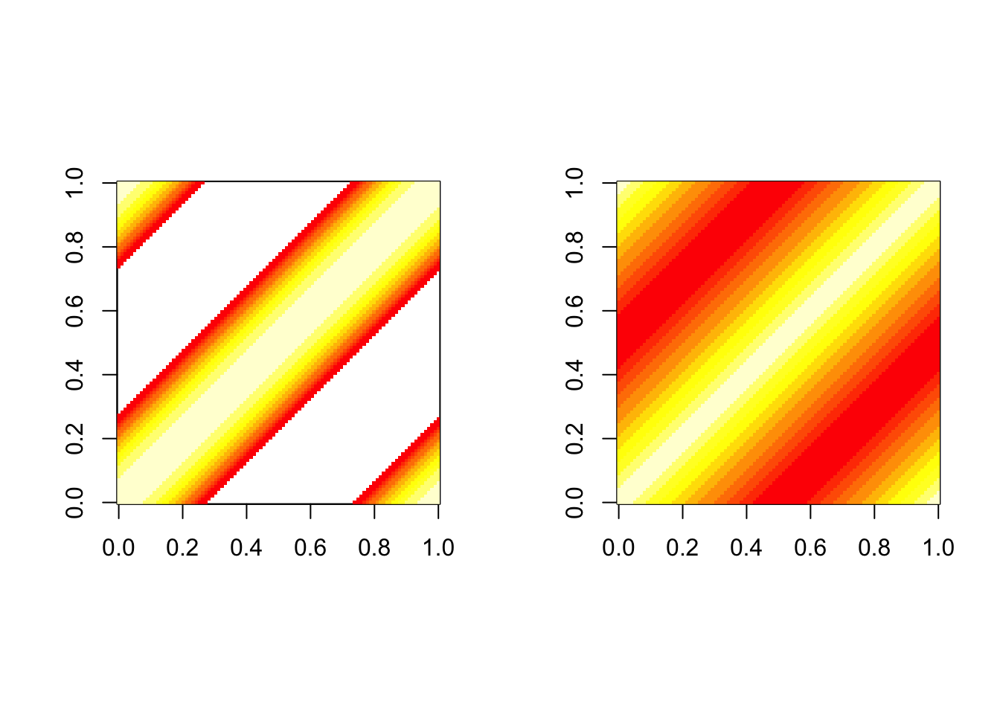
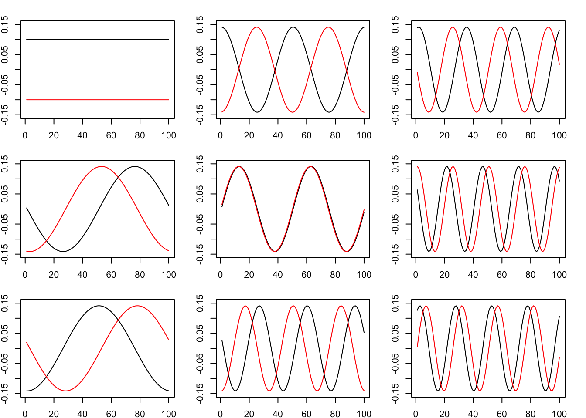
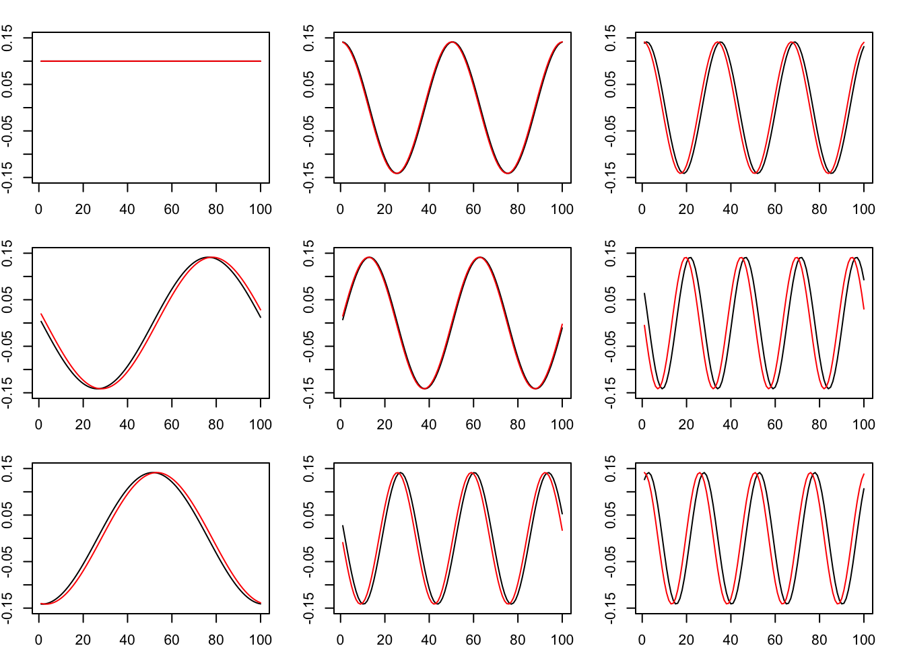
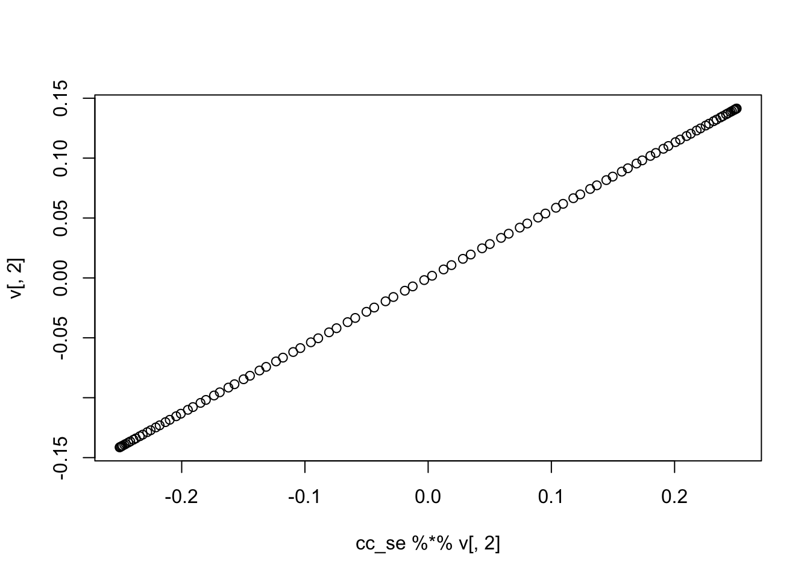
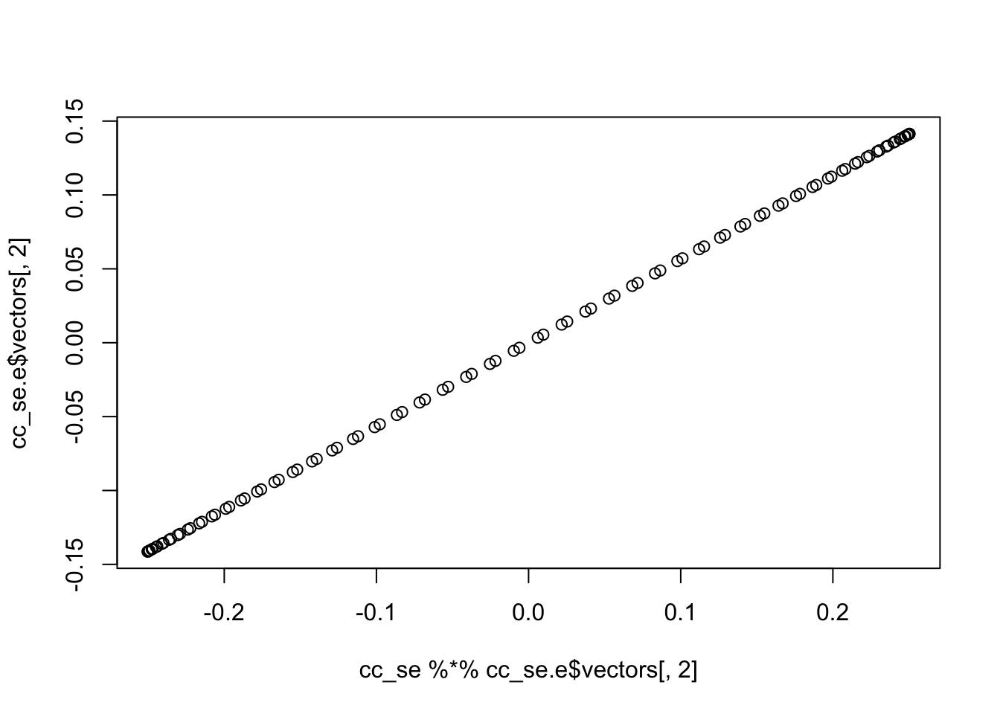
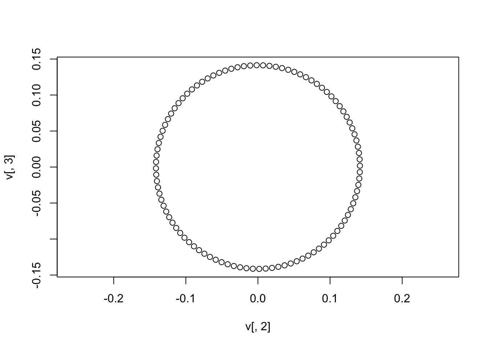
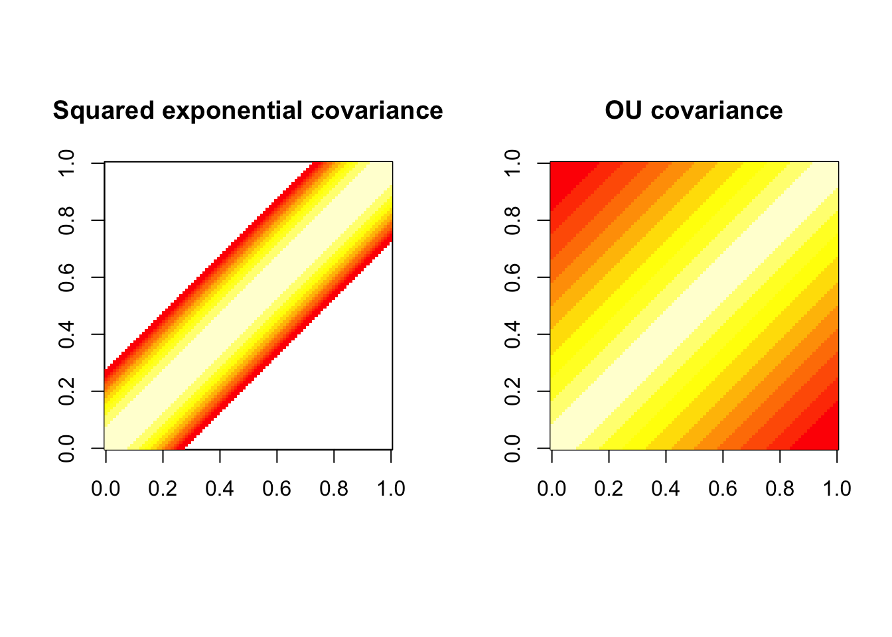
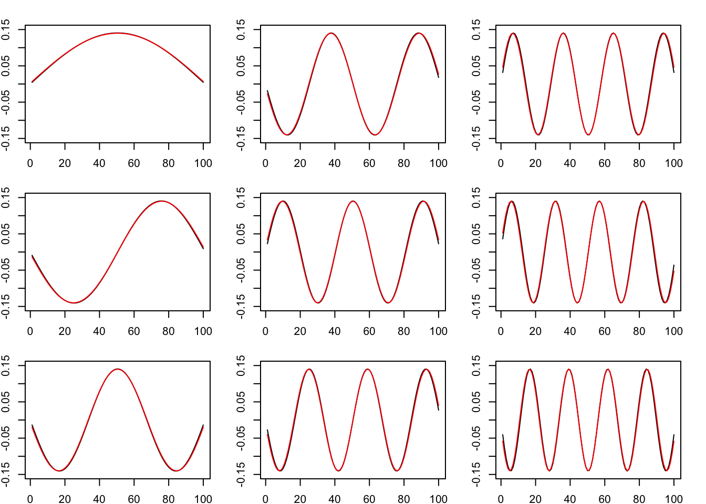
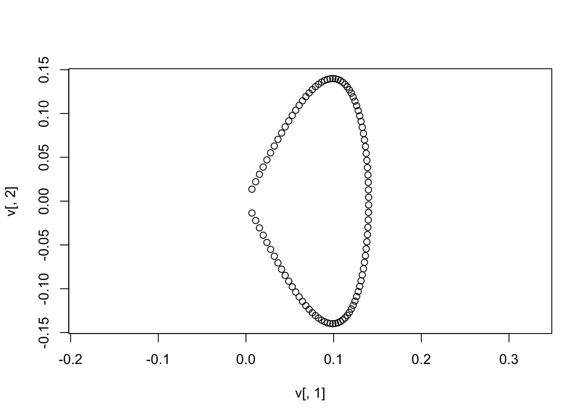

Last updated: 2018-05-23
workflowr checks: (Click a bullet for more information) ✔ R Markdown file: up-to-date
Great! Since the R Markdown file has been committed to the Git repository, you know the exact version of the code that produced these results.
✔ Environment: empty
Great job! The global environment was empty. Objects defined in the global environment can affect the analysis in your R Markdown file in unknown ways. For reproduciblity it’s best to always run the code in an empty environment.
✔ Seed:
set.seed(20180411)
The command set.seed(20180411) was run prior to running the code in the R Markdown file. Setting a seed ensures that any results that rely on randomness, e.g. subsampling or permutations, are reproducible.
✔ Session information: recorded
Great job! Recording the operating system, R version, and package versions is critical for reproducibility.
✔ Repository version: 80847ed
wflow_publish or wflow_git_commit). workflowr only checks the R Markdown file, but you know if there are other scripts or data files that it depends on. Below is the status of the Git repository when the results were generated:
Ignored files:
Ignored: .DS_Store
Ignored: .Rhistory
Ignored: .Rproj.user/
Ignored: .sos/
Ignored: exams/
Ignored: temp/
Untracked files:
Untracked: analysis/neanderthal.Rmd
Untracked: analysis/pca_cell_cycle.Rmd
Untracked: analysis/ridge_mle.Rmd
Untracked: data/reduced.chr12.90-100.data.txt
Untracked: data/reduced.chr12.90-100.snp.txt
Untracked: docs/PCA-Tutorial-Intuition_jp.pdf
Untracked: docs/UCLA_IPAM_PopStructure_Tutorial_2018.key
Untracked: docs/figure/pca_cell_cycle.Rmd/
Untracked: docs/figure/ridge_mle.Rmd/
Untracked: docs/pca_plot_1_2_time_step.pdf
Untracked: docs/strang.pdf
Untracked: homework/fdr.aux
Untracked: homework/fdr.log
Untracked: tempETA_1_parBayesC.dat
Untracked: temp_ETA_1_parBayesC.dat
Untracked: temp_mu.dat
Untracked: temp_varE.dat
Untracked: tempmu.dat
Untracked: tempvarE.dat
| File | Version | Author | Date | Message |
|---|---|---|---|---|
| Rmd | 80847ed | stephens999 | 2018-05-23 | workflowr::wflow_publish(“~/git/stat34800/analysis/circulant.Rmd”) |
You should be familiar with the idea of an eigen-decomposition of a matrix.
This vignette introduces the idea of a “circulant matrix” and one very remarkable property they have, which is easily stated: all \(n \times n\) circulant matrices have the same eigenvectors (…and they are the columns of the “discrete Fourier Transform” matrix.)
Define the “cyclic right shift” of a vector \(x\) to mean the vector obtained by moving each element of the vector \(x\) one position to the right, and moving the element at the end of the vector to the start of the vector.
So for example, the cyclic right shift of (1,2,3,4,5,6) is (6,1,2,3,4,5).
A circulant matrix is simply one where each column is the cyclic right shift of the previous column.
circulant <- function(x) {
n = length(x)
m = matrix(0,nrow=n,ncol=n)
for (i in 1:n) {
m[,i] = c(x[-(1:(n + 1 - i))], x[1:(n + 1 - i)])
}
return(m)
}
circulant(1:6) [,1] [,2] [,3] [,4] [,5] [,6]
[1,] 1 6 5 4 3 2
[2,] 2 1 6 5 4 3
[3,] 3 2 1 6 5 4
[4,] 4 3 2 1 6 5
[5,] 5 4 3 2 1 6
[6,] 6 5 4 3 2 1The amazing thing is that all \(n \times n\) circulant matrices have the same eigen vectors. This is not too hard to show mathematically. I tried putting together a numerical illustration of this, but ran into problems because reliably computing eigenvectors is often numerically tricky.
To make it easier I consider a special case where the eigenvector calculations seem not so bad. Fortunately this special case is one of applied interest.
Imagine \(n\) observations that lie equally spaced on a circle, each a unit distance apart.
So the distance of observation \(1\) from both observation 2 and observation \(n\) is 1 unit. More generally, if we write \(d_{1j}\) for the distance of observation 1 from observation \(j\) then the vector of distances \((d_{11},\dots,d_{1n})\) is \((0,1,2,3,4,...3,2,1)\) where the vector goes up to \(\ceiling[n/2]\) and then down again.
Now let \(d_{2j}\) denote the distance of observation 2 from observation \(j\). Then \((d_{21},\dots,d_{2n}) = (1,0,1,2,\dots,2)\). Notice this is a right cyclic shift of \(d_{1\cdot}\).
More generally, \(d_{t \cdot}\) is a right cyclic shift of \(d_{t-1 \cdot}\) and the distance matrix \(d =(d_{ij})\) is circulant (and symmetric).
Now let \(K()\) be a covariance kernel (e.g. squared exponential), and define the matrix \(K=(k_{ij})\) where \(k_{ij} = K(d_{ij})\). Then \(K\) is also circulant, symmetric, and PSD.
Here we compute this matrix for \(n=100\) and two kernels: the Squared exponential (SE) kernel and the Ohrnstein–Uhlenbeck (OU) kernel.
n = 100
set.seed(1)
halfn = ceiling(n/2)
x = c(0:halfn,(halfn-1):1) # distances on a circle
cc_se = circulant(exp(-x^2)) #squared exponential
cc_ou = circulant(exp(-x)) #Ornstein UhlenbeckThe standard image doesn’t work well on these numbers as some are so small, so here they are on the log scale:
par(mfcol=c(1,2),pty="s")
image(log(cc_se),asp=1)
image(log(cc_ou),asp=1)
cc_se.e = eigen(cc_se)
cc_ou.e = eigen(cc_ou)
par(mfcol=c(3,3),mai=c(0.25,0.25,0.25,0.25))
for(i in 1:9){
plot(cc_se.e$vectors[,i],type="l",ylim=c(-0.15,0.15))
lines(cc_ou.e$vectors[,i],type="l",col=2)
}
Those eigenvectors do not quite line up because the order of the eigenvectors is not quite the same, and also the signs differ.
Here I rearrange the eigenvectors of the OU so they are in the same order and have same sign as those from SE for plotting purposes.
v = cc_ou.e$vectors[,c(1,3,2,4,5,7,6,9,8)]
v[,c(1,4,7,8)] = -v[,c(1,4,7,8)]
par(mfcol=c(3,3),mai=c(0.25,0.25,0.25,0.25))
for(i in 1:9){
plot(cc_se.e$vectors[,i],type="l",ylim=c(-0.15,0.15))
lines(v[,i],type="l",col=2)
}
They still don’t quite agree exactly… I think this is a numeric issue. Here you can see that the second column of v is indeed (numerically) an eigenvector of cc_se.
plot(cc_se %*% v[,2],v[,2]) 
plot(cc_se %*% cc_se.e$vectors[,2],cc_se.e$vectors[,2]) 
Plot the first two eigenvectors against one another (ignoring the first constant eigenvector):
plot(v[,2],v[,3],pty="s",asp=1)
In many applications we have observations that are closer to being “on a line” than a circle (e.g. time series). In this case the simple mathematical results for circulant matrices do not apply, but you still get something similar - you can think of the line as part of a really big circle.
d =abs(outer(1:n,1:n,FUN="-"))
dline_se = exp(-d^2) #squared exponential
dline_ou = exp(-d) #Ornstein Uhlenbeck
par(mfcol=c(1,2),pty="s")
image(log(dline_se),asp=1,main="Squared exponential covariance")
image(log(dline_ou),asp=1,main="OU covariance")
dline_se.e = eigen(dline_se)
dline_ou.e = eigen(dline_ou)
par(mfcol=c(3,3),mai=c(0.25,0.25,0.25,0.25))
v = dline_ou.e$vectors
v[,c(1,2,5,6)] = -v[,c(1,2,5,6)] # flip for plotting purposes
for(i in 1:9){
plot(dline_se.e$vectors[,i],type="l",ylim=c(-0.15,0.15))
lines(v[,i],type="l",col=2)
}
First two eigenvectors now make a “horseshoe” shape
plot(v[,1],v[,2],pty="s",asp=1)
Of course, in practice we do not have perfectly regularly-spaced observations, and the observations are often “noisy”. That leads to deviations from these very clear shapes - but you still see this kind of thing in data.
sessionInfo()R version 3.3.2 (2016-10-31)
Platform: x86_64-apple-darwin13.4.0 (64-bit)
Running under: OS X El Capitan 10.11.6
locale:
[1] en_US.UTF-8/en_US.UTF-8/en_US.UTF-8/C/en_US.UTF-8/en_US.UTF-8
attached base packages:
[1] stats graphics grDevices utils datasets methods base
loaded via a namespace (and not attached):
[1] workflowr_1.0.1 Rcpp_0.12.16 digest_0.6.15
[4] rprojroot_1.3-2 R.methodsS3_1.7.1 backports_1.1.2
[7] git2r_0.21.0 magrittr_1.5 evaluate_0.10.1
[10] stringi_1.1.7 whisker_0.3-2 R.oo_1.22.0
[13] R.utils_2.6.0 rmarkdown_1.9 tools_3.3.2
[16] stringr_1.3.0 yaml_2.1.18 htmltools_0.3.6
[19] knitr_1.20 This reproducible R Markdown analysis was created with workflowr 1.0.1